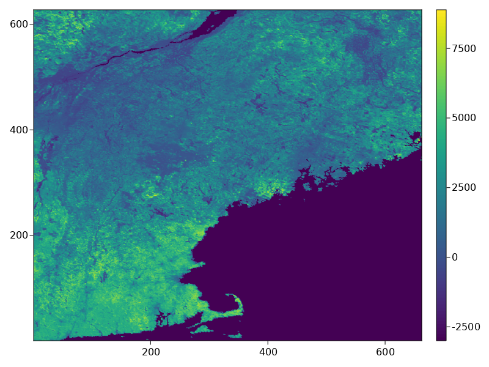

EarthEngineREST.jl
Julia package to send REST API requests to Google Earth Engine
Introduction
The EarthEngineREST.jl package aims to make connecting Earth Engine (EE) computations with Julia processing easier. This package is meant to interface with EarthEngine.jl and request Julia types/data from EE Types. While this package provides this functionality, the broader goal is to provide the full capabilities of the Earth Engine REST API
It should be noted that restee relies on fairly new and advanced EE features that may not be suitable for all users (see warning from the EE team). If you are new to Earth Engine, please get started with the JavaScript guide.
Installation
EarthEngineREST.jl is available through the Julia package registry, therefore you can install using the following code:
$ julia
julia> ]
pkg> add EarthEngineREST
julia> using EarthEngineRESTEarthEngineREST requires that the EarthEngine Julia packaged is installed as well. To do this, please see the EarthEngine installation guide
Quick start
This quick start example illustrates some of the core functionality of requesting Earth Engine computations to Julia types. To get started, you will need to import the packages and authenticate the APIs:
using EarthEngine
using EarthEngineREST
session = EESession("secret_key.json")
Initialize(session)Here the packages are imported and an authorized session for requesting information is created from your private key file for your service account. To get a private key file for your service account see the following the offical Earth Engine REST API Quickstart guide. The authorized session can also be used to Initialize the EarthEngine API as above.
Next we will using EathEngine to create some computations:
states = EE.FeatureCollection("TIGER/2018/States")
neus = filter(states,inList("NAME",(
"Maine","Vermont","New Hampshire", "Massachusetts"
)))
# Imagery: NDVI vegetation index from MODIS.
band = "NDVI"
images = select(EE.ImageCollection("MODIS/006/MOD13Q1"), band)
image = first(images)
computation = reduceRegions(
image;
collection=neus,
reducer=setOutputs(mean(EE.Reducer()),(band,)),
scale=nominalScale(projection(image))
)Now that we have defined the computation, we can request that table using computetable.
tableresult = computetable(session, computation)
# 4×16 DataFrame
# Row │ ALAND AWATER DIVISION FUNCSTAT GEOID INTPTLAT INTPTLON LSAD MTFCC NAME NDVI REGION STATEFP STATENS STUSPS geom ⋯
# │ Int64 Int64 String String String String String String String String Float64 String String String String IGeometr… ⋯
# ─────┼───────────────────────────────────────────────────────────────────────────────────────────────────────────────────────────────────────────────────────────────────────────────
# 1 │ 23189413166 1026675248 1 A 33 +43.6726907 -071.5843145 00 G4000 New Hampshire 2579.07 1 33 01779794 NH Geometry: wkbPol ⋯
# 2 │ 23874175944 1030416650 1 A 50 +44.0685773 -072.6691839 00 G4000 Vermont 1940.65 1 50 01779802 VT Geometry: wkbPol
# 3 │ 79887426037 11746549764 1 A 23 +45.4092843 -068.6666160 00 G4000 Maine 1911.13 1 23 01779787 ME Geometry: wkbPol
# 4 │ 20205125364 7129925486 1 A 25 +42.1565196 -071.4895915 00 G4000 Massachusetts 4190.74 1 25 00606926 MA Geometry: wkbPol
# 1 column omittedWe can also request image data. To do this, we need to define the geographic coordinate of to the image data we would like and then requst the data using computepixels:
# define a pixel grid for the Northeast US states at about 1km
pixelgrid = PixelGrid(session, neus, 0.01, "EPSG:4326")
data = computepixels(session, pixelgrid, image)
# 62x627x1 Array{Int16, 3} with AffineMap([0.01 0.0; 0.0 -0.01], [-73.50818980721034, 47.459858919112]) and CRS EPSG:4326If we plot the results we should see something like the following image:

Lastly, to illustrate how to get data from non-spatial computations, here we gather some metadata information from the image and make requests.
# compute the band names and get a local array
imgbands = bandNames(image)
bandlist = computevalue(session,imgbands)
# 1-element Vector{String}:
# "NDVI"
# compute the image date and get as local string
imgdate = format(date(image),"YYYY-MM-dd")
datestr = computevalue(session,imgdate)
# "2000-02-18"Sometimes calculating statistics or reading metadata from the image/collections is needed. Using the computevalue above, essentially any EE.ComputedObject can be requested to a local Julia data type and continue using on our local system.
More information on the API can be found in the API docs